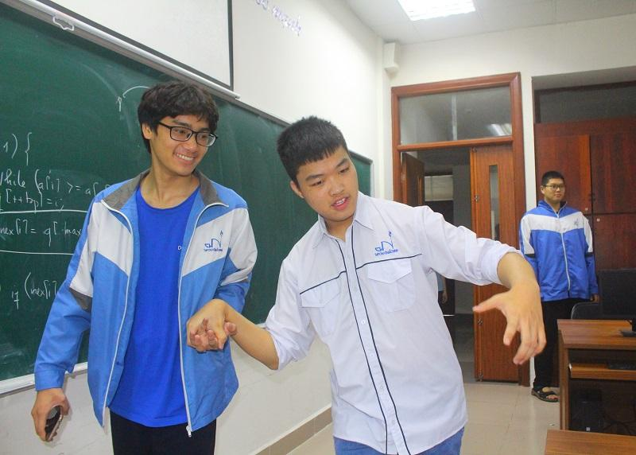
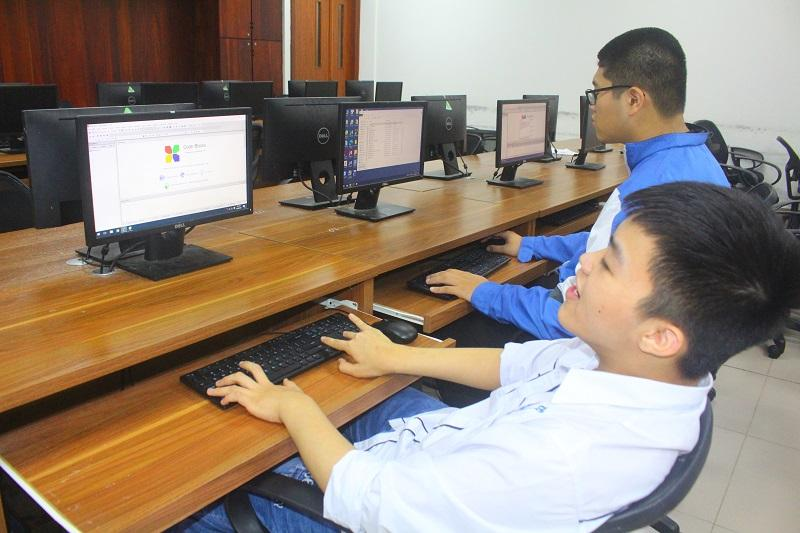
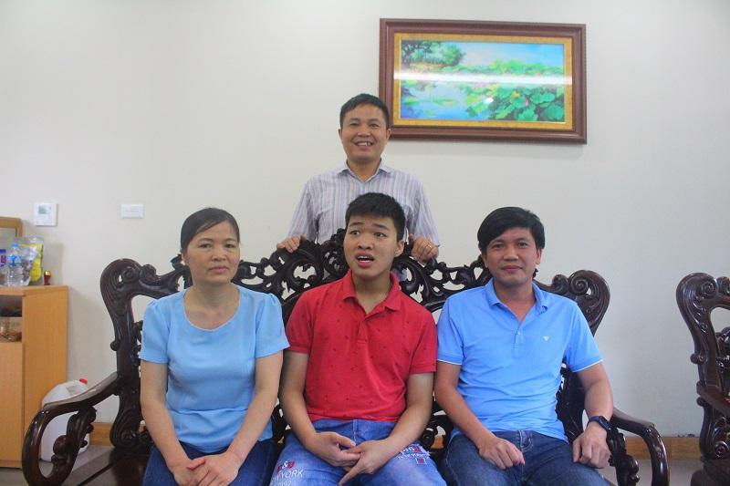

“Thuận khuyết tật” tranh tài Olympic Tin học Châu Á
Thuận bị khuyết tật bẩm sinh. Em không thể tự đi lại và khi nói phần nhiều là những tiếng ú ớ. Nhưng bảng thành tích học tập của em không khuyết tật...

Nguyễn Đức Thuận (bên phải) đến lớp trong niềm vui, yêu thương của các bạn.
Thuận vừa trở thành một trong 15 HS xuất sắc của Việt Nam chuẩn bị cho Kỳ thi Olympic Tin học Châu Á...
Mẹ đi học cùng cho đến lớp 2
Nguyễn Đức Thuận hiện là học sinh lớp 12 Tin - Trường THPT chuyên Bắc Ninh. Em sinh ra đã không lành lặn. Tay chân co cứng không thể tự đi lại. Khi nói chuyện em chỉ ú ớ và không phải ai cũng hiểu.
Nhưng bảng thành tích học tập của cậu học trò ấy năm học 2020 –2021 không hề “khuyết tật”. Đó là giải Nhì kỳ thi HS giỏi quốc gia, giải Nhất tin học trẻ toàn quốc. Đặc biệt hơn cả là lọt tốp 15 HS xuất sắc đại diện cho Việt Nam chuẩn bị cho kỳ thi Olympic Tin học Châu Á.
Tôi gặp Thuận tại căn phòng mà trường bố trí cho hai mẹ con ăn nghỉ. Người đàn bà lam lũ rưng rưng nước mắt khi tiếp chuyện với chúng tôi. Bà không dám nghĩ rằng, con mình lọt tốp 15 HS giỏi Tin học toàn quốc để thi Olympic Tin học Châu Á.
Bà Đỗ Thị Hoài San - mẹ của Thuận sinh ra và lớn lên trên mảnh đất Quế Võ – Bắc Ninh. “Năm 1991 tôi xây dựng gia đình. Bởi chồng là bộ đội nên quãng thời gian dành cho gia đình không được nhiều. Năm 1993 chị hạ sinh con đầu lòng. Bởi kinh tế khó khăn, chồng đi công tác xa đến năm 2003 mới sinh thêm Thuận…” - chị San nhớ lại.

Nguyễn Đức Thuận (áo trắng) học tập trên máy tính tại phòng học.
Ngày sinh Thuận, niềm vui chưa kịp đến thì bác sĩ thông báo em bị khuyết tật bẩm sinh chân tay và khoang miệng. “Ngày ấy, mỗi lần ôm con vào lòng là tôi nuốt ngược nước mắt vào trong. Hai vợ chồng động viên nhau cố gắng bù đắp cho con…”, chị San nói.
Năm tháng trôi đi, Thuận bắt đầu đến trường. “Từ những ngày học mẫu giáo 4 tuổi, đến năm lớp 2 buổi học nào 2 mẹ con cũng cùng nhau đi học, ngồi học cùng bàn, cùng lớp…”, chị San kể về những bước chân đầu tiên khi Thuận đến trường.
“Con thông minh và học giỏi lắm. Ngay khi chưa vào lớp 1, con đã nhận biết hết các mặt chữ, con số. Tuy nhiên, vì phát âm khó khăn nên mình vừa đưa con đi học, vừa làm phiên dịch viên cho con với thầy cô và các bạn…”, chị San nói.
Hết cấp 1 rồi lên cấp 2, năm học lớp 8 giáo viên chủ nhiệm phát hiện ra năng khiếu của Thuận về môn Tin học và khuyên gia đình cho cháu học thêm. Đồng thời, giới thiệu với thầy Ngô Quốc Minh (GV Tin học) trường THPT Chuyên Bắc Ninh để Thuận có thêm cơ hội học tập.
Không quản ngại đường xa, 2 bố con Thuận đèo nhau trên chiếc xe máy quê nhà lên thành phố Bắc Ninh để con được thỏa ước mơ. Cũng từ đây, cái duyên với môn Tin học của cậu học trò khuyết tật bắt đầu sang một trang mới.

Thầy cô và gia đình chia vui với Nguyễn Đức Thuận về những thành tích học tập đạt được.
Thi trượt…
Bước chân vào lớp 10, Nguyễn Đức Thuận nộp hồ sơ thi vào trường THPT Chuyên Bắc Ninh. Năm đó, Hội đồng tuyển sinh phải thành lập riêng một phòng thi cho em. Và trong kỳ thi này, em đã không đủ điểm để ghi tên mình vào ngôi trường mơ ước, Thuận được tuyển thẳng vào trường THPT Quế Võ 1.
“Khá tiếc cho Thuận và một số những HS khác mà tôi đã dạy bởi sự thông minh và hiếu học. Đối với những HS như vậy, ngoài việc miễn phí tiền học, tôi còn coi các em như con, em trong nhà. Nhiều em nhà xa, không thể về nhà thì có thể ở lại nhà tôi. Tôi dạy các em, nhưng cũng có những thứ chính tôi lại học từ các em…”, thầy Ngô Quốc Minh cho biết.
Ngọn lửa đam mê môn Tin học và những phấn đấu không ngừng nghỉ trong ý chí của chàng trai quê ấy. Ngay năm học đầu tiên của THPT, Thuận là một trong học sinh giỏi môn Tin học của tỉnh. Năm học lớp 11, cậu học sinh mê Tin học ấy đạt giải Ba học sinh giỏi quốc gia. Với những thành tích đã đạt được của Thuận, Sở GD&ĐTBắc Ninh đã làm hồ sơ tuyển đặc cách bổ sung vào học lớp 12 tại ngôi trường mà em đã từng thi trượt trước đó.
Để “dụng nhân tài”, nhà trường đã bố trí một phòng riêng cho em và mẹ ngay sát lớp học. Một lần nữa, chị San - mẹ Thuận lại cùng con khăn gói đến trường. “Trường có ký túc xá nhưng Thuận là học sinh đặc biệt, đi lại rất khó khăn nên. Ban giám hiệu sau khi đã thông qua và xin ý kiến từ cấp ủy đã tạo điều kiện tốt nhất để em được học tập. Phòng ở của cả hai mẹ con ngay tại gần lớp học…” , thầy Ngô Văn Bình - Phó hiệu trưởng Trường THPT Chuyên Bắc Ninh cho biết.
Ngay khi vừa bước chân về ngôi trường mới, Thuận phát huy khả năng của mình bằng những giải thưởng cao quý. Cậu lọt vào Đội tuyển tin học của tỉnh, của quốc gia và là 1 trong 15 HS trong Đội tuyển tin học của Việt Nam dự thi Olympic tin học Châu Á.
Thầy Bình chia sẻ: “Để đạt được thành tích này, Thuận phải vượt qua rất nhiều những nấc thang trước đó. Kỳ thi chọn HS giỏi quốc gia vừa qua, cả nước có hơn 500 HS giỏi dự thi chọn 250 em. Quá trình thi có 60 giải Nhất, Nhì để vào vòng trong thi quốc tế. Trong số ấy, Thuận đứng tốp 20 HS xuất sắc. Bộ GD&ĐT lấy 32 HS giỏi này tiếp tục vòng thi để chọn ra 15 em để vào Đội tuyển thi HS giỏi quốc tế. Thật tuyệt vời khi Thuận là 1 trong số 15 HS ấy”.
Thầy Bình cũng cho biết, năm học 2020 -2021 này, tỉnh Bắc Ninh có 3 HS đạt thành tích xuất sắc và lọt vào Đội tuyển Olympic Châu Á gồm 2 HS Tin học và 1 HS môn Vật lý. “Đây cũng là niềm tự hào không chỉ đối với Ban giám hiệu, thầy cô mà còn là sự nỗ lực của tập thể học sinh trong trường…”, thầy Bình nói.
Em Nguyễn Mai Hương, lớp 12 Tin (trường THPT chuyên Bắc Ninh) chia sẻ, Thuận rất chăm và học giỏi. “Cậu ấy giỏi Tin lắm. Có thể ngồi cả ngày trên máy tính mà không cần biết ai bên cạnh. Bạn ấy đi lại và nói chuyện rất khó khăn nhưng tham gia trao đổi rất sôi nổi…”, Mai Hương nói.
Nguyễn Duy Bảo (lớp 12 Tin – trường THPT Chuyên Bắc Ninh) thì bày tỏ: “Thuận hòa đồng, giúp đỡ các bạn học yếu hơn. Mặc dù tay chân và giọng nói của Thuận khó khăn nhưng chưa bao giờ thấy thuận bỏ buổi học. Ngoài tiết học Tin, các môn học khác Thuận rất cố gắng và được thầy cô, bạn bè yêu mến...”.
Thuận cho biết: “Em cố gắng học giỏi để không phụ lòng cha mẹ và các thầy cô, bạn bè. Em ước mơ trở thành sinh viên Trường Đại học Công nghệ (Đại học Quốc gia Hà Nội), được làm việc trong lĩnh vực tin học”.
Thầy Ngô Văn Bình - Phó hiệu trưởng Trường THPT Chuyên Bắc Ninh nói về Nguyễn Đức Thuận.“Thuận luôn lạc quan, chăm chỉ. Em đã cố gắng nỗ lực hết mình để vượt qua khó khăn. Thuận xứng đáng là tấm gương điển hình tiêu biểu cho sự nỗ lực vươn lên trong cuộc sống. Em chính là tấm gương về tinh thần hiếu học cho các bạn…”, thầy Bình nhấn mạnh.